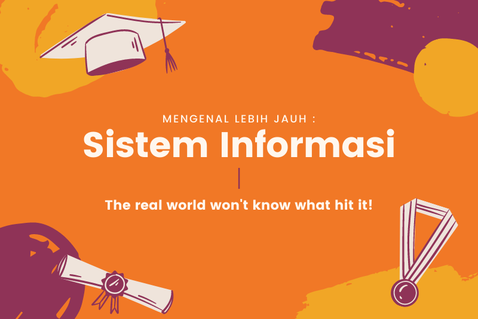

Pengertian Sistem Informasi
Sistem Informasi (SI) adalah kombinasi dari teknologi informasi dan aktivitas orang yang menggunakan teknologi itu untuk mendukung operasi dan manajemen. Dalam arti yang sangat luas, istilah sistem informasi yang sering digunakan merujuk kepada interaksi antara orang, proses algoritmik, data, dan teknologi. Dalam pengertian ini, istilah ini digunakan untuk merujuk tidak hanya pada penggunaan organisasi teknologi informasi dan komunikasi (TIK), tetapi juga untuk cara di mana orang berinteraksi dengan teknologi ini dalam mendukung proses bisnis.
Tujuan
Tujuan dari sistem informasi adalah menghasilkan informasi. Sistem informasi selalu melibatkan data-data penting dimana data yang diolah menjadi bentuk yang berguna bagi para pemakainya. Data yang diolah saja tidak cukup dapat dikatakan sebagai suatu informasi. Banyak yang dipelajari di dalam Sistem Informasi, seperti basis data, jaringan komputer, dan pemrograman berbasis framework. Yuk kita simak satu persatu.